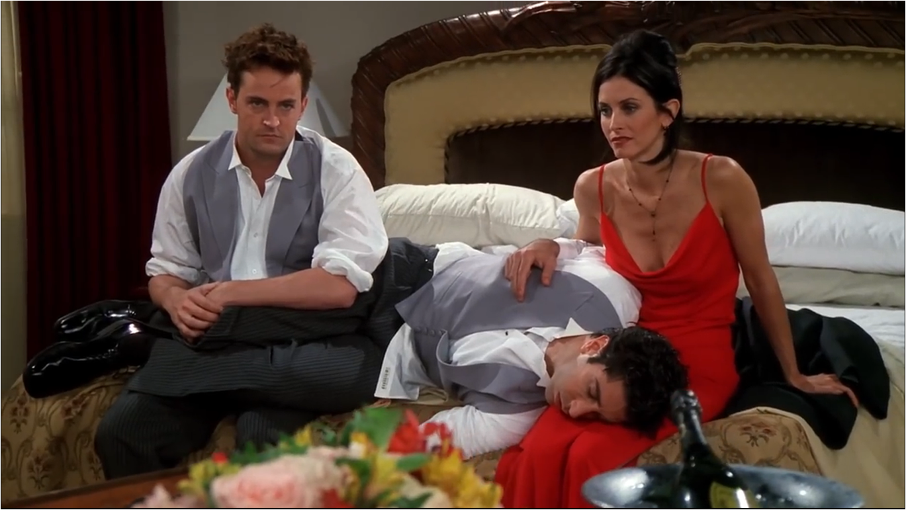

Most Watched Episode of Each Season
Season 1
The One Where Rachel Finds Out
After an entire first season of build-up, the secret love Ross has for Rachel finally comes out when Chandler lets it slip.
 Episode Clip
Episode Clip
Season 2
The One After the Superbowl Part 1 & 2
This double-feature episode follows Ross on his quest to find Marcel, Joey with an unstable romance, Phoebe performing for a children's group, and Chandler pursuing an old classmate.
 Episode Clip
Episode Clip
Season 3
The One Where Chandler Can't Remember Which Sister
After too many drinks at their party, Chandler can't remember which of Joey's sisters he kissed. The Ross and Rachel saga continues with Ross getting jealous.
 Episode Clip
Episode Clip
Season 4
The One With Ross's Wedding
Back in New York, Phoebe tries to help Rachel deal with her feelings for Ross as he leaves to marry Emily in London. Leaving Phoebe behinf, Rachel heads to London herself.
 Episode Clip
Episode Clip
Season 5
The One After Ross says Rachel
After Ross accidentally says "Rachel" during his vows marrying Emily, they proceed with the wedding but Emily dosappears. Monica and Chandler become secret lovers in London.
 Episode ClipSeason 6
The One With the Proposal
Chandler's plan to propose to Monica at dinner gets interrupted when Richard shows up and brings doubt. Monica decides to take her things into her own hands.
 Episode Clip
Episode Clip
Season 7
The One with Monica and Chandler's Wedding
Monica and Chandler are getting married but Chandler goes missing when he gets cold feet. Joey officiates for them wearing a costume from a new role. Rachel takes a pregnancy test.
 Episode Clip
Episode Clip
Season 8
The One Where Rachel Has a Baby
Having a baby with Ross, Rachel starts a long labor process in the hospital. Monica and Chandler decide to have a baby and Joey helps Phoebe get closer to a new love interest.
 Episode Clip
Episode Clip
Season 9
The One Where No One Proposes
Rachel feels like she and Ross have a moment after the birth of Emma but she is worried he doesn't deel the same. Some confusion with a ring leads her to accept a proposal from Joey.
 Episode Clip
Episode Clip
Season 10
The Last One
Ross and Rachel confess their love and commit to each other. Monica and Chandler bring home triples and the friends say goodbye to Monica's apartment.
 Episode Clip
Episode Clip